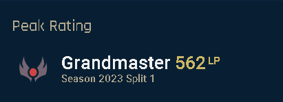

Grandmaster Rengar/Blue Kayn
Hi, I'm bolk a rengar/blue kayn player from LAS server, i been playing league from 2017
and now im retired because im studying computer engineering and this is my first
attemp to create a blog for remember my old days.

Go to my stats
My peak Elo playing assassins like Rengar, Kayn, Kha'Zix, Diana, and Evelynn was 562 LP
(winning 22 LP and losing 24-25). My playstyle was based on counter-jungling, playing
without
priority,opting for risky plays, and securing all the in-game gold resources on the map.